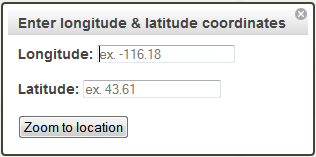
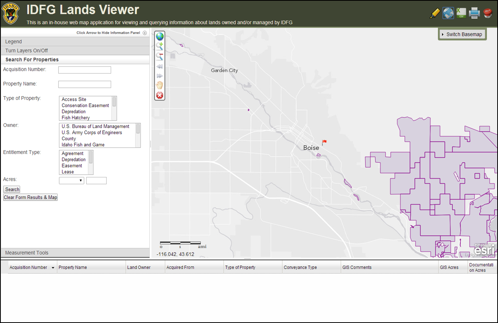

TOOLBAR: Zoom to Location (long, lat)
If you would like to navigate to a particular area using a longitude, latitude coordinate activate this tool by clicking the tool icon. A dialog box will appear that asks you to input the longitude, latitude coordinate.
Activate the tool and input your coordinate:

Click the "Zoom to location" button and close the dialog box by clicking the "x" in the upper-right hand corner. A red flag will appear at the location and it will be zoomed to.

Click the tool icon again to zoom to a new longitude, latitude coordinate or double-click to clear the flag and deactivate the tool.
Created with the Personal Edition of HelpNDoc: Easily create EBooks